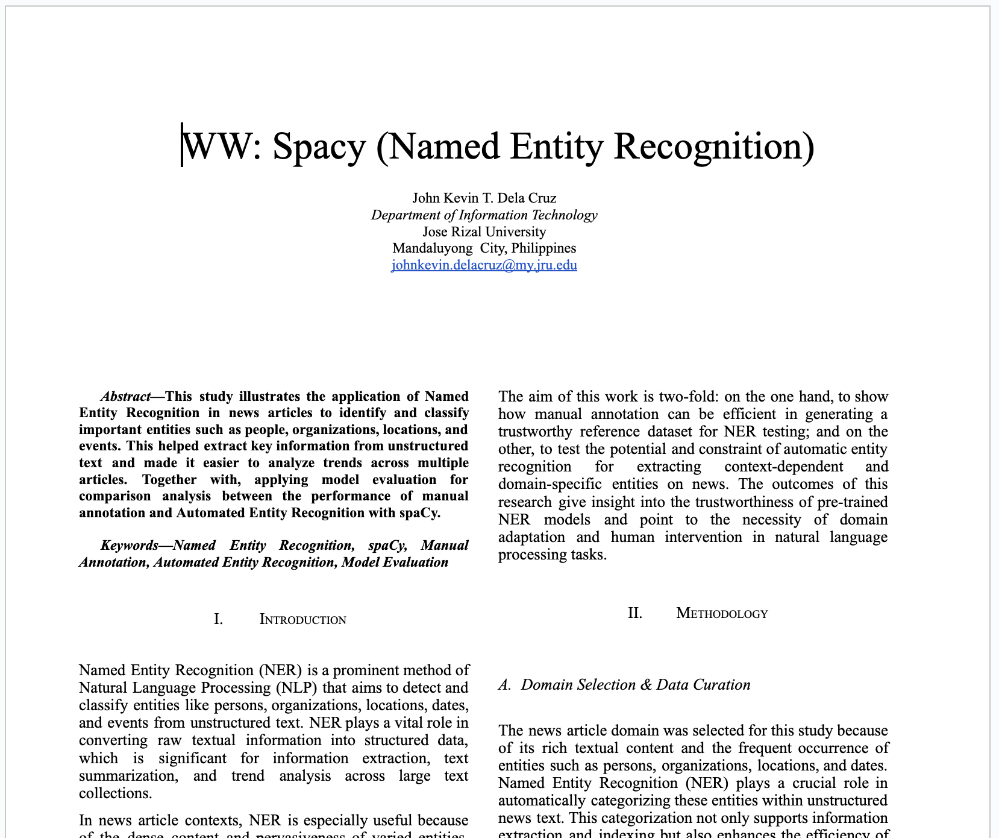

Written Works Reflection spaCy (Named Entity Recognition)
- During this written works, I studied Lecture 5 (Spacy and Basic NLP Tasks) within week 4.
- From Lecture 5, I focused on the spaCy library, an open-source tool for advanced Natural Language Processing (NLP) in Python. SpaCy is designed for production use and enables building applications that process and understand large volumes of text efficiently. I also explored spaCy’s statistical models such as en_core_web_sm, en_core_web_md, and en_core_web_lg. Most importantly, I learned about one of the fundamental techniques in NLP Named Entity Recognition (NER). NER is the process of locating named entities in unstructured text and classifying them into predefined categories such as people, organizations, locations, monetary values, and percentages. This foundational concept helped me complete this written work effectively.
- To carry out the activity, I followed the step-by-step instructions in Mr. Raga’s provided notebook and selected the news article domain as my focus. I gathered a sample text from an online article and applied NER to extract entities. I then performed model evaluation, comparing the automated results with manual annotations through comparability analysis. To strengthen my understanding, I conducted additional research from sources like Medium articles, YouTube tutorials, and GeeksforGeeks. I also used ChatGPT to assist in standardizing my code while building the automated entity recognition model.
- Overall, this written work gave me hands-on experience with NER, particularly in comparing automated recognition with manual annotation. It also allowed me to gain insights into the strengths and limitations of automated entity recognition in identifying and classifying entities within news articles.